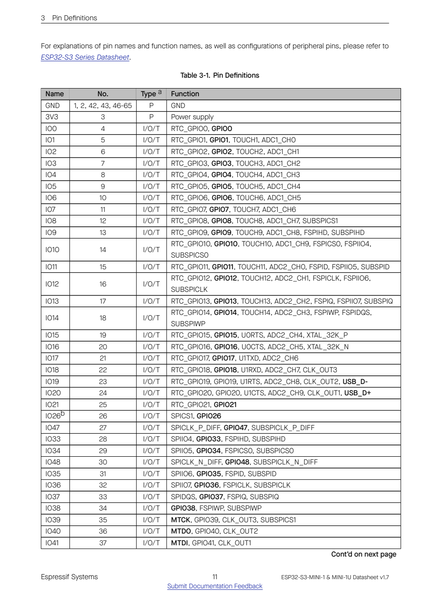
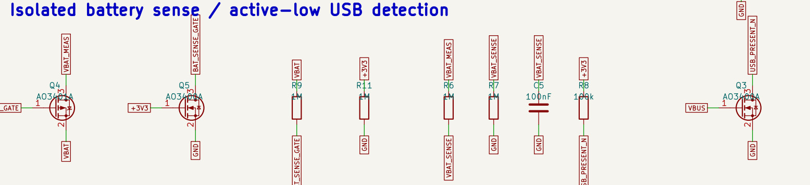

What the circuit does
| Check | Finding |
|---|
| Five buttons | GPIO9–13 to GND; firmware enables pull-ups. Pressed = LOW. Debounce and sleep wake configuration required. |
| Wheel | GPIO5 → 2 kΩ → 10 kΩ potentiometer → GND. Wiper → GPIO4 / ADC1_CH3, filtered by 10 nF. |
| Wheel voltage | Nominal maximum 3.3 × 10/12 = 2.75 V. At +30% pot and −1% series-resistor tolerance, 2.864 V at a 3.3 V supply. Rail tolerance also affects this. |
| Wheel load | Approximately 0.275 mA nominal while enabled. Power briefly, wait about 1 ms, sample, then drive GPIO5 LOW. |
| Battery | GPIO1 / ADC1_CH0 receives half the nominal battery voltage: 4.2 V → 2.1 V. The 1 MΩ/1 MΩ divider and 100 nF capacitor have a nominal 50 ms time constant; wait at least 250 ms after enabling power. |
| USB detection | Q3 pulls GPIO2 LOW when VBUS is present; external 100 kΩ pull-up defines absence. The GPIO is not connected directly to 5 V. |
Configure appropriate ADC attenuation and calibration. Nominal divider calculations do not establish measurement accuracy; resistor tolerance, leakage and sampling behavior matter.
Manufacturer references
Espressif ADC guide · ESP32-S3 12 dB nominal 0–3100 mV range · Alps RK10J family
Board specifies RK10J11R0A0H / C470766. Current manufacturer family listings show other suffixes; exact ordered part, drawing and availability still need supplier review. Do not substitute suffixes automatically.
ESP32 module pin/function table
Open datasheet page 11
Battery and USB sensing

Q4/Q5 disconnect the battery feed to the divider when 3.3 V is OFF. Orientation is consistent with that intent. This is not a battery load cutoff. Stored charge, leakage and power-off rail behavior still need measurement.
Accepted: keep the existing wheel
RV1 is an absolute-position potentiometer with end stops. Its position represents a volume level. User accepts the physical end stops and existing hardware. Firmware will handle calibration, filtering and volume synchronization; exact synchronization behavior is still to be implemented.
No wiring correction identified in this check. Bench requirements: debounce, button wake without retrigger loops, wheel end-stop calibration/noise/settling, battery accuracy against a meter, and OFF-state sense-pin/rail voltages. Previously accepted firmware low-battery handling remains unchanged.
Display boost/substitution and physical-fit checks remain open; moving to this section did not sign them off.